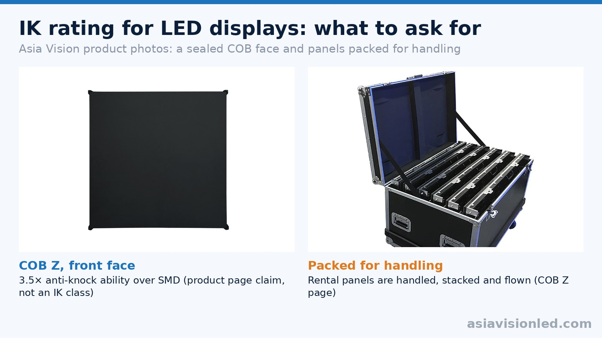
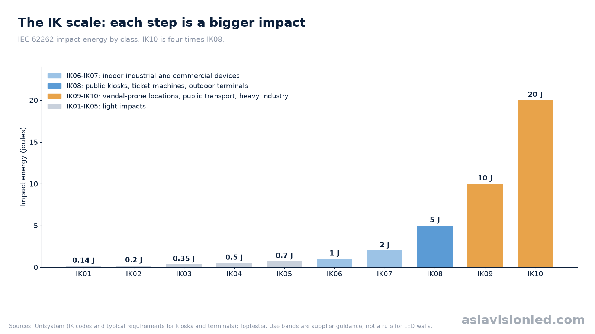
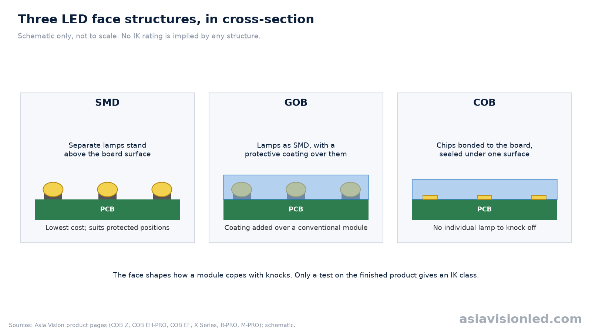
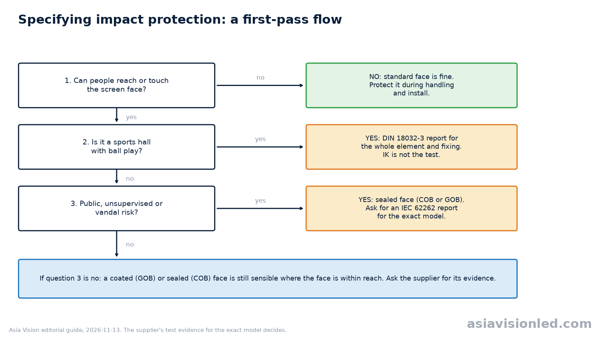

By Danny · 2026-11-13
An IK rating tells you how much impact energy a tested product withstood, from IK00 (none) to IK10 (20 joules). It is not a property of an LED technology, and it applies only to the exact configuration that was tested. Many LED display datasheets either leave IK out or quote a class with no report behind it. A buyer who writes "IK10" into a tender without more detail can end up with a number that proves little.
This guide is for buyers of LED displays that people can reach: retail frontages, concourses, schools, transport hubs and sports venues. It explains the IK scale, what it does not cover, how SMD, GOB and COB faces differ, why sports halls use a different test, and how to read a test report. It also states plainly what Asia Vision publishes about impact resistance, which is a relative claim and not an IK class.
The IK code comes from IEC 62262, the international standard for the degree of protection that enclosures provide against external mechanical impacts. It is written as "IK" and two digits, from IK00 (no protection) to IK10 (the highest class). The standard defines the test by impact energy in joules, using calibrated hammers described in IEC 60068-2-75, and specifies where and how the impacts are applied.
| IK code | Impact energy | Test impact |
|---|---|---|
| IK06 | 1 J | 0.25 kg from 400 mm |
| IK07 | 2 J | 0.5 kg from 400 mm |
| IK08 | 5 J | 1.7 kg from 300 mm |
| IK09 | 10 J | 5 kg from 200 mm |
| IK10 | 20 J | 5 kg from 400 mm |
Each step up is a larger impact. IK10 is four times IK08. Lower classes run from IK01 (0.14 J) upward. The chart shows the full scale with the bands in which one display supplier says each class is typically used.

IK scale by impact energy. The use bands are one display supplier's typical guidance for kiosks and terminals, not a rule for LED walls.
After the impacts, the product has to keep working and must not expose hazardous parts. What counts as a pass is set by the product standard that calls up the IK test. So a report should state the criteria that were used, not only the class.
The IK ratings most buyers see are written for kiosks, terminals and lighting: products where the weak point is a flat front glass, and where the answer is a thicker or tempered cover glass, laminated glass, an anti-shatter film, optical bonding and a strong bezel and mounting. An LED wall is built differently. Most LED modules are used without a front glass. The face is the LED surface itself, built from many small modules in a cabinet grid.
That has two consequences. First, the face structure of the module matters more than any cover. Second, the "weakest point" in a test may be a lamp, a module edge or a cabinet corner, not the middle of a sheet of glass. This is why a report must name the exact product and the points tested.
Mounting matters as well. A cabinet screwed to a rigid wall behaves differently from one hung on a truss, set in a frame or built into a curve. If your installation differs from the one in the report, ask whether the result still applies. The sports-hall example below shows how closely a test copies the real fixing.
The three common constructions differ in what sits on the surface:

Schematic of three face structures. Not to scale. No IK rating is implied by any structure.
For a full comparison of the three, see our encapsulation guide and the COB technology guide. For storefronts, see the retail storefront guide. The structure shapes how a module copes with knocks, but only a test on the finished product tells you the class.
Our product pages make relative claims about knock resistance. They do not quote IK classes, and we do not present them as IK ratings.
| Series | Face | What the page says |
|---|---|---|
| COB Z | Flip-chip COB (SMD/GOB options on the platform) | 3.5× anti-knock ability over SMD; aimed at rental handling |
| COB EH-PRO | COB, outdoor | 4.5× robustness compared to SMD; IP65 |
| COB EF | COB | Anti-collision protection; no lamp to knock off |
| X Series | COB, SMD or GOB selectable | GOB where a protective coating is needed over a conventional module, typically in areas with knocks or dust |
| R-PRO | SMD or GOB | GOB adds a protective layer for spaces with higher contact risk |
| M-PRO | SMD or GOB | Optional GOB adds an extra protection layer over the SMD LEDs |
The multipliers are relative to SMD. They tell you the direction, not an IK class. If a project needs an IK class, ask us in writing before ordering, and we will tell you what evidence exists for the model and configuration you want.
Start from who can reach the screen and what could hit it. The flow below is a first-pass logic, not a standard.

First-pass decision flow for impact protection. The supplier's test evidence for the exact model decides.
One display supplier's guidance places IK06 to IK07 in indoor industrial and commercial devices, IK08 in public kiosks and outdoor terminals, and IK09 to IK10 in vandal-prone places such as public transport. That guidance is for terminals, not LED walls, so use it as a rough anchor and set the class from your own risk assessment, ideally with the venue operator or insurer.
Plan spares for any exposed position. Even a sealed face can be damaged by a hard enough hit, and a spare module on site turns a dark patch into a short repair. See our spare parts inventory guide.
For rental fleets, impact class is rarely the main issue. Handling, stacking and load-out are. See the weather shelter guide for outdoor protection around a screen.
In a sports hall the relevant test is DIN 18032-3, ball-impact safety, not IK. ISP, a German institute for sports-facility testing, says all wall elements and installation elements in and on hall walls must comply with it. Walls must be smooth, flat, closed and splinter-free up to at least 2.70 m. Elements fall into categories W1 to W3. A handball, and for W2 and W3 also a hockey ball, is fired at the element from three angles by a ball-shooting machine at a defined speed. The element is mounted on a test wall the way it will be installed.
ISP states that an element passes if it shows no serious damage (even paint chipping or cracks count), no part comes loose or falls off, and function, safety and stability are unchanged. Bürk Mobatime, a German clock and display maker, reports that its LED videowall was fixed to a wall with four steel brackets at the Materialprüfungsanstalt of the University of Stuttgart and hit 54 times with a handball at 90 and 45 degrees without damage. The example shows two things: the test covers the whole element and its fixing, and a pass applies to that product and mounting. An IK class does not substitute for it, and a ball-impact pass does not give an IK class.
See our sports venue guide and the stadium perimeter buying guide for other requirements in these venues.
A report has to be more than a certificate with a class on it. As an example of what a genuine one contains, a public IK08 report from the Lighting Association Laboratories for a floodlight (a lighting product, not an LED display) shows these parts:
Apply the same reading to any LED report. Does it name the standard and edition? Is it the model you are buying, or only a related one? Which points were hit: lamp face, module edge, cabinet corner? What counted as a pass, for example whether all pixels still worked? Who issued it, and when? A missing item is a question for the supplier.
Pair this with the guidance in our IP rating guide, since public-space screens usually need both.
Asia Vision is a Shenzhen LED display manufacturer founded in 2015, with a 5,000 m² factory, 50+ production staff and ISO 9001, CE, FCC, RoHS, ETL and CCC certifications. Every batch is burn-in tested for 72 hours. Tell us the position, the people who can reach it and any ball-play or vandal risk. We will recommend a face and tell you what evidence exists for it. Orders carry a 3-year warranty and leave the factory within 18 days. There is no MOQ and no tooling fee.
Send the position, who can reach the screen and any ball-play or vandal risk. We will recommend SMD, GOB or COB and tell you what evidence exists for the model. Email info@asiavisionled.com or message us on WhatsApp at +86 172 7666 5558.
Request a RecommendationChat on WhatsApp